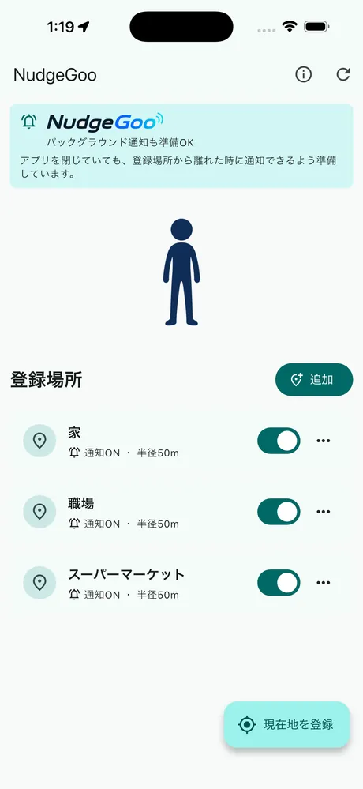
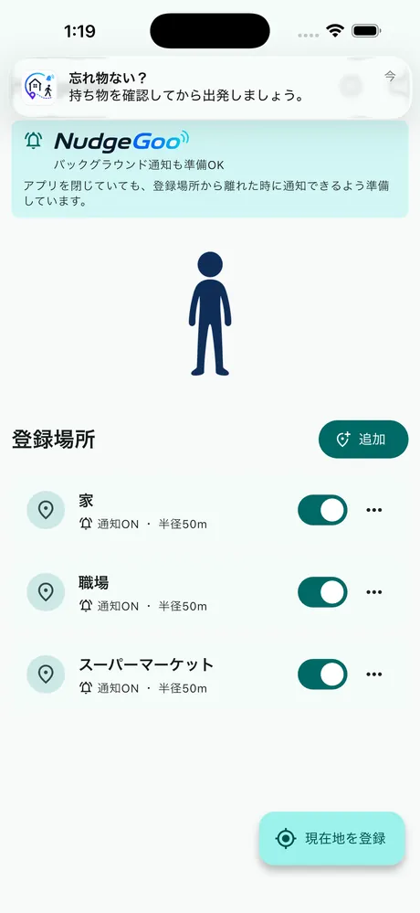
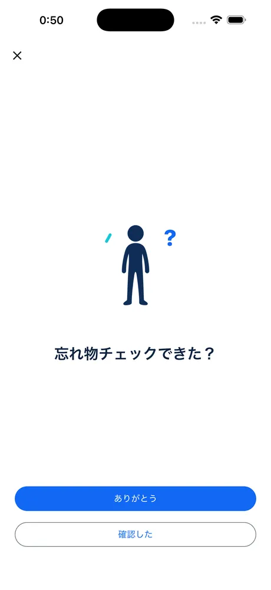
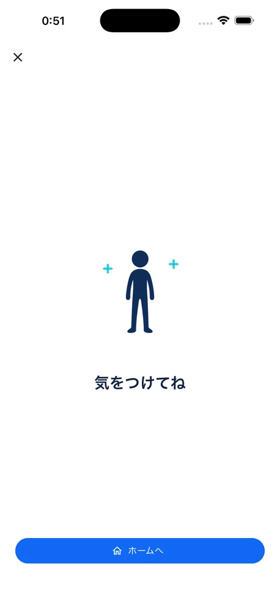
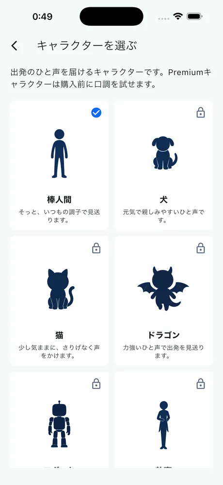

01
登録した場所を出るときに、そっと通知
家や職場はもちろん、よく行くスーパーやお店も登録できます。 場所ごとに通知のオン・オフと半径を設定でき、出発時にだけお知らせします。
DEPARTURE REMINDER APP
公式サイト・サポート
思い出すのは、あなた。
思い出させるのは、NudgeGoo。
登録した場所を出るときに「忘れ物ない？」とそっと通知する、 シンプルな出発リマインダーです。
App Storeで配信中

WHY NUDGEGOO?
忘れ物を防ぐために、毎回細かなリストを作るのは大変です。 必要なことは、すでに自分の記憶やいつものメモにあるかもしれません。
NudgeGooが届けるのは、新しいTODOではなく 「今、思い出すタイミングです」という小さなきっかけです。
家や職場など登録した場所を出る瞬間に、そっと通知。 生活の邪魔をせず、必要な瞬間だけ背中を押します。
WHAT IS NUDGEGOO?
持ち物を管理するTODOアプリではありません。出発というタイミングで、 あなた自身が必要なことを思い出すためのきっかけを届けます。
基本機能は無料 場所の登録・出発通知・確認と見送りは、無料で利用できます。

01
家や職場はもちろん、よく行くスーパーやお店も登録できます。 場所ごとに通知のオン・オフと半径を設定でき、出発時にだけお知らせします。

02
通知を開くと、キャラクターが「忘れ物チェックできた？」と声をかけます。 長いリストを埋めるのではなく、必要な記憶を呼び戻すための短い確認です。

03
忘れ物を確認したあとは、キャラクターが短い言葉で見送ります。 毎日の出発を邪魔しない、必要なときだけの小さなナッジです。

04
無料の棒人間に加え、買い切りで5体のキャラクターを選べます。 キャラクターごとに、通知や見送りの口調が変わります。
FOR YOUR DEPARTURES
忘れ物が気になる場所を登録して、必要なタイミングだけ通知を受け取れます。
FREQUENTLY ASKED QUESTIONS
設定や使い方で困ったときは、まずこちらをご確認ください。
端末の設定で、NudgeGooの位置情報が「常に許可」、通知が許可になっているかをご確認ください。 電波状況や端末の状態などにより、通知が遅れる場合があります。
位置情報は端末内でのみ処理され、開発者のサーバーへ送信されません。 詳しくはプライバシーポリシーをご覧ください。
キャラクター選択画面の「購入を復元」からお試しください。
キャラクターの見た目に加え、通知と見送りの口調が変わります。 購入はキャラクターごとの買い切りです。
はい。場所の登録、出発通知、確認と見送りなど、コア機能はすべて無料で使えます。 無料の棒人間キャラクターでも機能に違いはありません。
標準の50mからお試しください。半径を広くすると、その範囲を出るまで通知されないため、 通知が遅く感じることがあります。